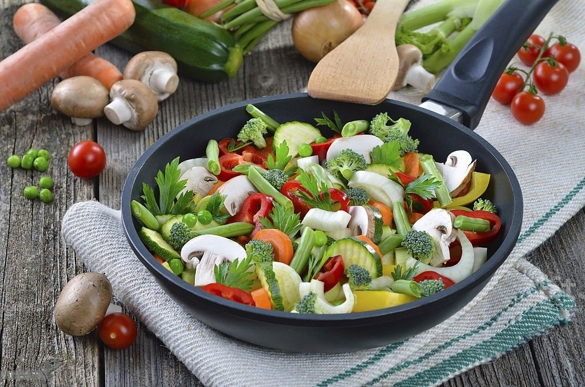

Omelete

- INGREDIENTES:
- -2 ovos
- -1 fatia de presunto
- -2 fatias de queijo
- -tempero verde a gosto
MODO DE PREPARO:
Bata os 2 ovos, pode ser na batedeira ou não.
Após ter batido bem, coloque-o na frigideira já untada com óleo, acrescente o sal, o presunto picado em quadradinhos e as duas fatias de queijo (não precisa picar o queijo).
Coloque os temperos a gosto, espere ficar firme, e vire o omelete.
Está pronto um omelete delicioso, bom apetite!
Arroz

- INGREDIENTES:
- -2 xícaras de arroz
- -2 dentes de alho amassado
- -1 colher de sopa de óleo
- -2 xícaras de água
- -Sal a gosto
MODO DE PREPARO:
Em uma panela de pressão, coloque o alho e o óleo e deixe dourar.
Acrescente o arroz (já lavado), o sal e mexa.
Acrescente a água e tampe a panela de pressão.
Quando começar a chiar, abaixe o fogo após 5 minutos desligue o fogo e espere a pressão sair naturalmente.
Sirva ainda quente.
Ratatouille
- INGREDIENTES:
- -1 abobrinha média
- -1 berinjela média
- -1 cebola grande (opcional)
- -2 tomates
- -Champignon
- -Sal, manjericão e azeite de oliva a gosto
MODO DE PREPARO:
Corte em rodelas de mais ou menos um centímetro a abobrinha, a berinjela, o tomate e a cebola.
Agora, em uma panela funda, coloque pouco menos de um dedo de azeite, para que cubra o fundo totalmente, em seguida, coloque as rodelas dos legumes (exceto a cebola), intercalando-as, faça isso acompanhando o formato redondo da panela, até fechar um círculo.
Solte os anéis da cebola cortada em rodelas, e jogue por cima, para finalizar essa camada.
Em seguida tempere essa camada com sal a gosto, e algumas folhas de manjericão fresco.
Repita os passos 2 e 3 até os legumes acabarem.
Finalize com um fio de azeite e um pouco mais de manjericão fresco.
Tampe a panela e cozinhe em fogo médio até os legumes ficarem tenros.
Sirva em seguida.